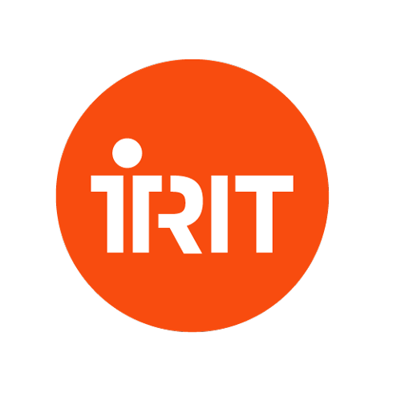
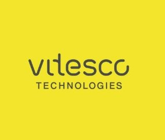

Relevant Skills for Animation Studios & CG
- Python (scripting, automation, pipeline tools)
- Computer Graphics & Image Processing
- 3D/2D Animation Concepts
- Multimedia Programming
- AI & Machine Learning basics
- Data Analysis & Visualization
- Web Development (HTML, CSS, JS)
- Teamwork & Communication
- Problem Solving & Adaptability
- Curiosity & Willingness to Learn
Who am I?Qui suis-je ?
I'm deeply curious and love creating and sharing work that conveys emotion and sparks imagination. That's why I'm studying computer science with a focus on Images & Multimedia: to combine technical skills with creative storytelling.
My goal is to join an animation studio as a Python developer for tools, or on projects involving image processing, audiovisual data, computer graphics, or 3D modeling. I want to contribute to teams building reliable, artist-friendly workflows and meaningful visuals.
Je suis profondément curieuse et j'aime créer et partager des œuvres qui transmettent des émotions et font rêver. C'est pourquoi j'étudie l'informatique, en particulier les Images et le Multimédia : pour allier compétences techniques et narration créative.
Mon objectif est de rejoindre un studio d’animation, soit comme développeuse Python pour les outils, soit sur des projets de traitement d’image, d’audiovisuel, de computer graphics ou de modélisation 3D. Je souhaite contribuer à des workflows fiables et orientés artistes.
Previous internshipsStages précédents
My previous internships are shown below, highlighting practical experience in data processing, software development, and multimedia.Vous trouverez ci-dessous mes stages précédents illustrant mon expérience pratique en traitement de données, développement logiciel et multimédia.
-
Data Processing InternshipStage Traitement de données IRIT, Toulouse — 2024 — 4 months
Retrieval of satellite images and calculation of vegetation index based on GPS coordinates, and assistance in the detection and identification of arthropods. Helped train and cross-validate recognition models. IRIT, Toulouse — 2024 — 4 mois
Récupération d'images satellite et calcul d'indice de végétation à partir de coordonnées GPS, et assistance à la détection et l'identification d'arthropodes. Participation à l'entraînement et à la validation croisée de modèles de reconnaissance. -
Python Software Developer InternshipStage Développeur Python Vitesco Technologies, Toulouse — 2024 — 2 months
Prototyping the processing of measurement files from electric battery test benches by creating a Python architecture that allows for processing, analyzing, and validating the proper execution of the tests. Vitesco Technologies, Toulouse — 2024 — 2 mois
Prototypage du traitement des fichiers de mesures provenant de bancs d'essai de batteries électriques en créant une architecture Python permettant le traitement, l'analyse et la validation du bon déroulement des tests.
Personal Professional Project (PPP)Projet Professionnel Personnel (PPP)
My professional project is to join an animation studio and contribute as a Python developer for tools or on projects involving image processing, audiovisual data, computer graphics, or 3D modeling. I am motivated by curiosity and a desire to learn from experienced teams, and I look forward to growing within this inspiring field. Mon projet professionnel est de rejoindre un studio d’animation et de contribuer soit comme développeuse Python pour les outils, soit sur des projets de traitement d’image, d’audiovisuel, de computer graphics ou de modélisation 3D. Je suis motivée par la curiosité et l’envie d’apprendre auprès d’équipes expérimentées, et j’ai hâte d’évoluer dans ce domaine inspirant.